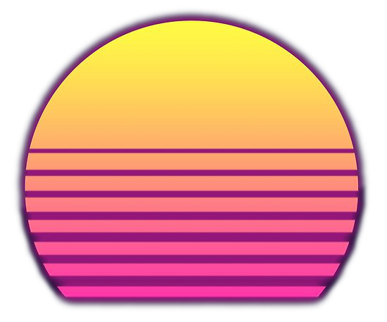
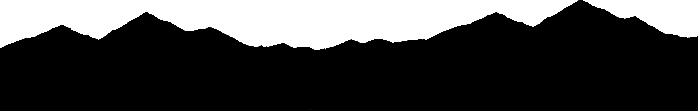

Sunset Grid code at:
https://github.com/johnstoecker/sunsetgrid
Sunset Grid consumes internet radio from:
poolside.fm:
poolside.fm
Radio Record Synthwave:
radiorecord.ru
Synthwave Retrowave Radionomy:
radionomy.com/en/radio/synthwaveretrowaveradio/index
Radio Caprice Retrowave:
radcap.ru
Radio Caprice Space Synth:
radcap.ru